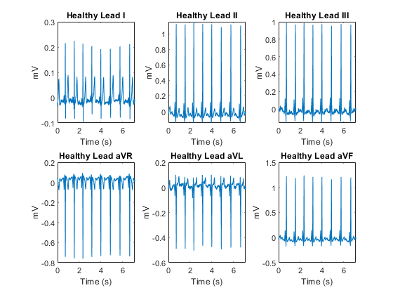
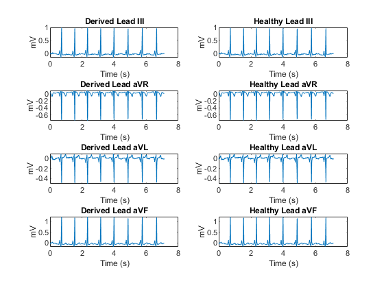
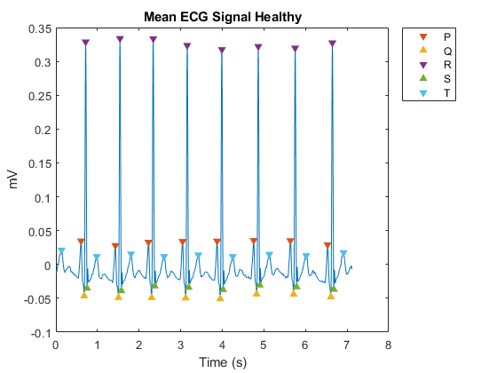
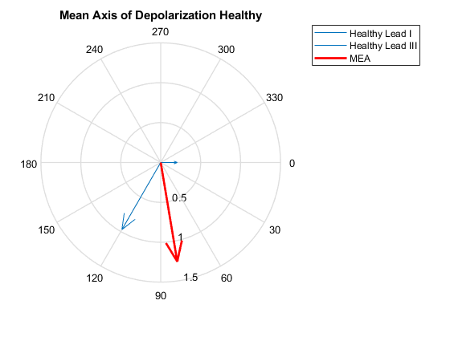
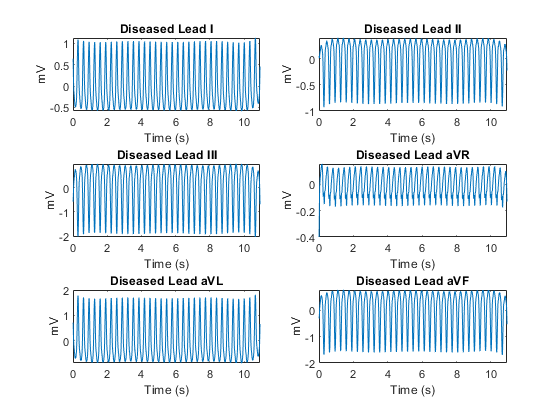
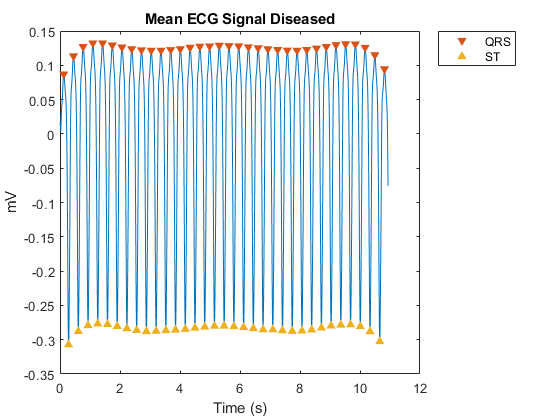
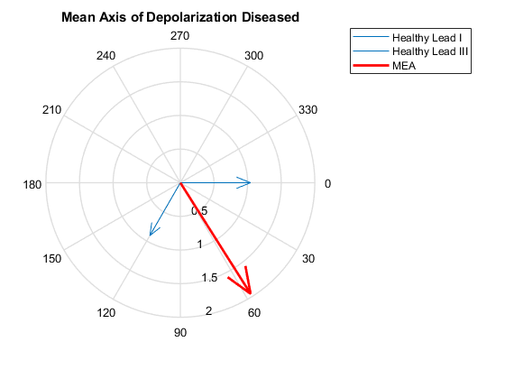

Contents
Part 1
clear; clc; close all % Import healthy data healthy = readtable("Lab2_Healthy_Data_ECG.xlsx"); healthy_time = healthy.Time; healthy_leadI = healthy.LeadI./1000; healthy_leadII = healthy.LeadII./1000; healthy_leadIII = healthy.LeadIII./1000; healthy_aVR = healthy.aVR./1000; healthy_aVL = healthy.aVL./1000; healthy_aVF = healthy.aVF./1000; % Detrend healthy data healthy_leads = [healthy_leadI,healthy_leadII,healthy_leadIII,healthy_aVR,healthy_aVL,healthy_aVF]; detrend_healthy_leads = []; for i = 1:6 [p1, ~, mu1] = polyfit(healthy_time,healthy_leads(:,i),7); detrend_healthy_leads(:,end+1) = healthy_leads(:,i) - polyval(p1, healthy_time, [], mu1); end % Plot ECG data figure(Name = '6-Lead ECG Healthy') subplot_titles_1 = ["Healthy Lead I","Healthy Lead II","Healthy Lead III","Healthy Lead aVR",... "Healthy Lead aVL","Healthy Lead aVF"]; for i = 1:6 subplot(2,3,i) plot(healthy_time,detrend_healthy_leads(:,i)) title(subplot_titles_1(i)) xlabel('Time (s)') ylabel('mV') end % Derive LeadIII, aVF, aVL, aVR Cal_LeadIII = detrend_healthy_leads(:,2) - detrend_healthy_leads(:,1); Cal_aVF = ((2.*detrend_healthy_leads(:,2))-detrend_healthy_leads(:,1))./(sqrt(3)); Cal_aVL = ((2.*detrend_healthy_leads(:,1))-detrend_healthy_leads(:,2))./(sqrt(3)); Cal_aVR = -(detrend_healthy_leads(:,2)+detrend_healthy_leads(:,1))./(sqrt(3)); a = isequal(Cal_LeadIII,detrend_healthy_leads(:,3)); % Compare derived leads to actual figure(Name = 'Derived 6-Lead ECG') compare_derived = [Cal_LeadIII,detrend_healthy_leads(:,3),Cal_aVR,detrend_healthy_leads(:,4),... Cal_aVL,detrend_healthy_leads(:,5),Cal_aVF,detrend_healthy_leads(:,6)]; subplot_titles_2 = ["Derived Lead III","Healthy Lead III","Derived Lead aVR","Healthy Lead aVR"... ,"Derived Lead aVL","Healthy Lead aVL","Derived Lead aVF","Healthy Lead aVF"]; for i = 1:8 subplot(4,2,i) plot(healthy_time,compare_derived(:,i)) title(subplot_titles_2(i)) xlabel('Time (s)') ylabel('mV') end for i = 1:2:8 b = isequal(compare_derived(:,i),compare_derived(:,i+1)); end
Warning: Column headers from the file were modified to make them valid MATLAB identifiers before creating variable names for the table. The original column headers are saved in the VariableDescriptions property. Set 'VariableNamingRule' to 'preserve' to use the original column headers as table variable names. 
Part 2
% Average leads/detrend data average_healthy_lead = mean(detrend_healthy_leads,2); [p2, ~, mu2] = polyfit(healthy_time,average_healthy_lead,7); detrend_avg_healthy = average_healthy_lead - polyval(p2, healthy_time, [], mu2); smoothECG_healthy = sgolayfilt(detrend_avg_healthy,7,21); % Initialize PQRST arrays P_peaks_healthy = []; P_locs_healthy = []; Q_peaks_healthy = []; Q_locs_healthy = []; T_peaks_healthy = []; T_locs_healthy = []; S_peaks_healthy = []; S_locs_healthy = []; R_peaks_healthy = []; R_locs_healthy = []; % Find P, R, and T [PRT_peaks_healthy,PRT_locs_healthy] = findpeaks(smoothECG_healthy,NPeaks=25,MinPeakHeight=0.01,MinPeakDistance=20); for i = 1:length(PRT_peaks_healthy) if mod(i-1,3) == 0 T_peaks_healthy(end+1) = PRT_peaks_healthy(i); T_locs_healthy(end+1) = PRT_locs_healthy(i); elseif mod(i-2,3) == 0 P_peaks_healthy(end+1) = PRT_peaks_healthy(i); P_locs_healthy(end+1) = PRT_locs_healthy(i); else R_peaks_healthy(end+1) = PRT_peaks_healthy(i); R_locs_healthy(end+1) = PRT_locs_healthy(i); end end % Find Q and S [QS_peaks_healthy,QS_locs_healthy] = findpeaks(-smoothECG_healthy,MinPeakHeight=0.020,MinPeakProminence=0.03); for i = 1:length(QS_peaks_healthy) if mod(i-2,3) == 0 Q_peaks_healthy(end+1) = -QS_peaks_healthy(i); Q_locs_healthy(end+1) = QS_locs_healthy(i); elseif mod(i,3) == 0 S_peaks_healthy(end+1) = -QS_peaks_healthy(i); S_locs_healthy(end+1) = QS_locs_healthy(i); end end % Plot PQRTS figure(Name = 'PQRST Plot') plot(healthy_time,smoothECG_healthy,'-'); hold on scatter(healthy_time(P_locs_healthy),P_peaks_healthy,'v','filled'); scatter(healthy_time(Q_locs_healthy),Q_peaks_healthy,'^','filled'); scatter(healthy_time(R_locs_healthy),R_peaks_healthy,'v','filled'); scatter(healthy_time(S_locs_healthy),S_peaks_healthy,'^','filled'); scatter(healthy_time(T_locs_healthy),T_peaks_healthy,'v','filled'); legend('','P','Q','R','S','T','Location','northeastoutside'); xlabel('Time (s)'); ylabel('mV'); title('Mean ECG Signal Healthy') % Measure Heart Rate RR_int_healthy = []; for i = 1:length(S_locs_healthy)-1 RR_int_healthy(end+1) = healthy_time(R_locs_healthy(i+1))-healthy_time(R_locs_healthy(i)); end average_RR_int_healthy = mean(RR_int_healthy); bpm_healthy = 60/average_RR_int_healthy; % Maximum and Minimum healthy_max = max(smoothECG_healthy); healthy_min = min(smoothECG_healthy); % Average Interval Calculations average_PQ_int_healthy = mean(healthy_time(Q_locs_healthy)-healthy_time(P_locs_healthy)); average_PR_int_healthy = mean(healthy_time(R_locs_healthy)-healthy_time(P_locs_healthy)); average_QT_int_healthy = mean(healthy_time(T_locs_healthy(2:end))-healthy_time(Q_locs_healthy)); % MEA [peaks_healthy_I,~] = findpeaks(detrend_healthy_leads(:,1),MinPeakHeight=0.15,MinPeakDistance=20); [peaks_healthy_III,~] = findpeaks(detrend_healthy_leads(:,3),MinPeakHeight=0.3,MinPeakDistance=20); x1_healthy = mean(peaks_healthy_I)*cosd(0); y1_healthy = mean(peaks_healthy_I)*sind(0); x2_healthy = mean(peaks_healthy_III)*cosd(120); y2_healthy = mean(peaks_healthy_III)*sind(120); slope_healthy = tand(120); slope_tang_healthy = -1/slope_healthy; y3_healthy = slope_tang_healthy*(x1_healthy-x2_healthy)+y2_healthy; magnitude_healthy = sqrt(x1_healthy^2 + y3_healthy^2); dir_healthy = atan2d(y3_healthy,x1_healthy); figure(Name = 'Mean Axis of Depolarization') c_healthy = compass([x1_healthy,x2_healthy,magnitude_healthy*cosd(dir_healthy)],[y1_healthy,y2_healthy,magnitude_healthy*sind(dir_healthy)]); c_healthy(3).LineWidth = 2; c_healthy(3).Color = 'r'; view(0,-90) title('Mean Axis of Depolarization Healthy') legend('Healthy Lead I','Healthy Lead III','MEA') % Data for report healthy_data = {bpm_healthy,healthy_max,healthy_min,average_PQ_int_healthy,average_PR_int_healthy,average_QT_int_healthy,dir_healthy}; 
Part 3 (Written Specifically for Ventricular Tachycardia)
Criteria for peaks from: https://ecgwaves.com/topic/ventricular-tachycardia-vt-ecg-treatment-causes-management/#:~:text=ECG%20features%20of%20ventricular%20tachycardia,-%E2%89%A53%20consecutive&text=Ventricular%20tachycardia%20with%20rate%20100,%E2%89%A50%2C12%20s).
diseased = readtable("Lab2_Disease_Data_ECG.xlsx"); diseased_time = diseased.Time; diseased_LeadI = diseased.LeadI; diseased_LeadII = diseased.LeadII; diseased_LeadIII = diseased.LeadIII; diseased_aVR = diseased.aVR; diseased_aVL = diseased.aVL; diseased_aVF = diseased.aVF; diseased_leads = [diseased_LeadI,diseased_LeadII,diseased_LeadIII,diseased_aVR,diseased_aVL,diseased_aVF]; detrend_diseased_leads = []; for i = 1:6 [p3, ~, mu3] = polyfit(diseased_time,diseased_leads(:,i),7); detrend_diseased_leads(:,end+1) = diseased_leads(:,i) - polyval(p3, diseased_time, [], mu3); end figure subplot_titles_2 = ["Diseased Lead I","Diseased Lead II","Diseased Lead III","Diseased Lead aVR","Diseased Lead aVL","Diseased Lead aVF"]; for i = 1:6 subplot(3,2,i) plot(diseased_time,detrend_diseased_leads(:,i)) title(subplot_titles_2(i)) xlabel('Time (s)') ylabel('mV') end % Average leads/detrend data average_diseased_lead = mean(detrend_diseased_leads,2); [p4, ~, mu4] = polyfit(diseased_time,average_diseased_lead,7); detrend_avg_diseased = average_diseased_lead - polyval(p4, diseased_time, [], mu4); smoothECG_diseased = sgolayfilt(detrend_avg_diseased,7,21); % Find QRS peaks and ST peaks [QRS_peaks_diseased,QRS_locs_diseased] = findpeaks(smoothECG_diseased,MinPeakHeight=0.01,MinPeakDistance=20); [ST_peaks_diseased,ST_locs_diseased] = findpeaks(-smoothECG_diseased,MinPeakHeight=0.020,MinPeakProminence=0.03); figure(Name = 'PQRST Plot') plot(diseased_time,smoothECG_diseased,'-'); hold on scatter(diseased_time(QRS_locs_diseased),QRS_peaks_diseased,'v','filled'); scatter(diseased_time(ST_locs_diseased),-ST_peaks_diseased,'^','filled'); legend('','QRS','ST','Location','northeastoutside'); xlabel('Time (s)'); ylabel('mV'); xlabel('Time (s)'); ylabel('mV'); title('Mean ECG Signal Diseased') % Measured Heart Rate RR_int_diseased = []; for i = 1:length(QRS_locs_diseased)-1 RR_int_diseased(end+1) = diseased_time(QRS_locs_diseased(i+1))-diseased_time(QRS_locs_diseased(i)); end average_RR_int_diseased = mean(RR_int_diseased); bpm_diseased = 60/average_RR_int_diseased; % Maximum and Minimum diseased_max = max(smoothECG_diseased); diseased_min = min(smoothECG_diseased); % Average Interval Calculations (NO Specific P, Q, R, S, T peaks) % % average_PQ_int_diseased = mean(diseased_time(Q_locs_diseased)-diseased_time(P_locs_diseased)) % % average_PR_int_diseased = mean(diseased_time(R_locs_diseased)-diseased_time(P_locs_diseased)) % % average_QT_int_diseased = mean(diseased_time(T_locs_diseased(2:end))-diseased_time(Q_locs_diseased)) % MEA [peaks_diseased_I,~] = findpeaks(detrend_diseased_leads(:,1),MinPeakHeight=0.15,MinPeakDistance=20); [peaks_diseased_III,~] = findpeaks(detrend_diseased_leads(:,3),MinPeakHeight=0.3,MinPeakDistance=20); x1_diseased = mean(peaks_diseased_I)*cosd(0); y1_diseased = mean(peaks_diseased_I)*sind(0); x2_diseased = mean(peaks_diseased_III)*cosd(120); y2_diseased = mean(peaks_diseased_III)*sind(120); slope_diseased = tand(120); slope_tang_diseased = -1/slope_diseased; y3_diseased = slope_tang_diseased*(x1_diseased-x2_diseased)+y2_diseased; magnitude_diseased = sqrt(x1_diseased^2 + y3_diseased^2); dir_diseased = atan2d(y3_diseased,x1_diseased); figure(Name = 'Mean Axis of Depolarization Diseased') c_diseased = compass([x1_diseased,x2_diseased,magnitude_diseased*cosd(dir_diseased)],[y1_diseased,y2_diseased,magnitude_diseased*sind(dir_diseased)]); c_diseased(3).LineWidth = 2; c_diseased(3).Color = 'r'; view(0,-90) title('Mean Axis of Depolarization Diseased') legend('Healthy Lead I','Healthy Lead III','MEA') % Data for report diseased_data = {bpm_diseased,diseased_max,diseased_min,"N/A","N/A","N/A",dir_diseased};
Warning: Column headers from the file were modified to make them valid MATLAB identifiers before creating variable names for the table. The original column headers are saved in the VariableDescriptions property. Set 'VariableNamingRule' to 'preserve' to use the original column headers as table variable names.  
Diagnosis
Find Voltages
[peaks1,locs1] = findpeaks(detrend_diseased_leads(:,1),MinPeakHeight=0.15,MinPeakDistance=20); [peaks2,locs2] = findpeaks(detrend_diseased_leads(:,2),MinPeakHeight=0.15,MinPeakDistance=20); [peaks3,locs3] = findpeaks(detrend_diseased_leads(:,3),MinPeakHeight=0.15,MinPeakDistance=20); [npeaks1,nlocs1] = findpeaks(-detrend_diseased_leads(:,1),MinPeakHeight=0.15,MinPeakDistance=20); [npeaks2,nlocs2] = findpeaks(-detrend_diseased_leads(:,2),MinPeakHeight=0.15,MinPeakDistance=20); [npeaks3,nlocs3] = findpeaks(-detrend_diseased_leads(:,3),MinPeakHeight=0.15,MinPeakDistance=20); v1 = []; v2 = []; v3 = []; for i = 1:length(peaks1) if mod(i,3) == 0 v1(end+1) = peaks1(i) - npeaks1(i); v2(end+1) = peaks2(i) - npeaks2(i); v3(end+1) = peaks3(i) - npeaks3(i); end end sum_QRS_voltage = mean(v1) + mean(v2) + mean(v3); QRS_int_diseased = []; for i = 1:length(ST_locs_diseased)-1 QRS_int_diseased(end+1) = diseased_time(ST_locs_diseased(i+1))-diseased_time(ST_locs_diseased(i)); end average_QRS_int_diseased = mean(QRS_int_diseased); issues = string(); possible_diseases = string(); % Heart Rate Check if bpm_diseased > 100 issues(end+1) = "High BPM"; possible_diseases(end+1) = "Tachycardia"; elseif bpm_diseased < 60 issues(end+1) = "Low BPM"; possible_diseases(end+1) = "Bradycardia"; end % Voltage Check if sum_QRS_voltage < 0.5 issues(end+1) = "Low Voltage"; possible_diseases(end+1) = "Pericardial fluid buildup"; possible_diseases(end+1) = "Pulmonary emphysema"; possible_diseases(end+1) = "Previous myocardial infarctions/diminished cardiac muscle mass"; elseif sum_QRS_voltage >2.0 issues(end+1) = "High Voltage"; possible_diseases(end+1) = "Hypertrophy (High Voltage)"; end % QRS Wave Check if average_QRS_int_diseased > 0.08 issues(end+1) = "Prolonged QRS Wave"; if average_QRS_int_diseased <= 0.12 possible_diseases(end+1) = "Hypertrophy (Prolonged QRS Wave)"; possible_diseases(end+1) = "Dilation"; elseif average_QRS_int_diseased > 0.12 possible_diseases(end+1) = "Damage to cardiac muscle"; possible_diseases(end+1) = "Blocks in the Purkinje system"; end end % MEA Check if dir_diseased >= 270 && dir_diseased <= 330 issues(end+1) = "Left Axis Deviation (LAD)"; possible_diseases(end+1) = "Left ventricular hypertrophy"; possible_diseases(end+1) = "Conduction defects: left bundle branch block, left anterior fascicular block"; possible_diseases(end+1) = "Inferior wall myocardial infarction"; possible_diseases(end+1) = "Preexcitation syndromes (LAD)"; possible_diseases(end+1) = "Ventricular ectopic rhythms (LAD)"; possible_diseases(end+1) = "Congenital heart disease (eg, primum atrial septal defect, endocardial cushion defect)"; possible_diseases(end+1) = "Hyperkalemia (LAD)"; possible_diseases(end+1) = "Emphysema (LAD)"; possible_diseases(end+1) = "Mechanical shift, such as with expiration or raised diaphragm"; elseif dir_diseased >= 110 && dir_diseased <= 180 issues(end+1) = "Right Axis Deviation (RAD)"; possible_diseases(end+1) = "Right ventricular overload syndromes"; possible_diseases(end+1) = "Right ventricular hypertrophy"; possible_diseases(end+1) = "Conduction defects: left posterior fascicular block, right bundle branch block"; possible_diseases(end+1) = "Lateral wall myocardial infarction"; possible_diseases(end+1) = "Preexcitation syndromes (RAD)"; possible_diseases(end+1) = "Ventricular ectopic rhythms (RAD)"; possible_diseases(end+1) = "Congenital heart disease (eg, secundum atrial septal defect)"; possible_diseases(end+1) = "Dextrocardia"; possible_diseases(end+1) = "Left pneumothorax"; possible_diseases(end+1) = "Mechanical shift, such as with inspiration or emphysema"; elseif dir_diseased > 180 && dir_diseased < 270 issues(end+1) = "Extreme Axis Deviation (EAD)"; possible_diseases(end+1) = "Ventricular ectopic rhythms (EAD)"; possible_diseases(end+1) = "Hyperkalemia (EAD)"; possible_diseases(end+1) = "Emphysema (EAD)"; end if isempty(issues) == true fprintf('Patient is healthy.\n') else fprintf('Issues:\n') fprintf('%s\n',issues(2:end)) fprintf('\nPossible Diseases:\n') fprintf('%s\n',possible_diseases(2:end)) end
Issues: High BPM Low Voltage Prolonged QRS Wave Possible Diseases: Tachycardia Pericardial fluid buildup Pulmonary emphysema Previous myocardial infarctions/diminished cardiac muscle mass Damage to cardiac muscle Blocks in the Purkinje system
Tables for report
filename = 'Lab2_report_table.xlsx'; rownames = ["Measured Heart Rate (bpm)","Maximum Voltage (mV)","Minimum Voltage (mV)"... ,"Average P-Q Interval (s)","Average P-R Interval (s)","Average Q-T Interval (s)","Mean Electrical Axis (degrees)"]; T = table(rownames',healthy_data.',diseased_data'); T.Properties.Description = 'Table for report'; T.Properties.VariableNames = ["Type","Healthy State","Diseased State"]; writetable(T,filename,'Sheet','Data'); filename2 = 'Lab2_diagnostic_criteria.xlsx'; diagnosis = ["High BPM","Low BPM","Low Voltage","High Voltage","Prolonged QRS Wave",... "Left Axis Deviation","Right Axis Deviation","Extreme Axis Deviation"]; criteria = ["Measured Heart Rate > 100 bpm","Measured Heart Rate < 60 bpm",... "Sum of QRS Voltage < 0.5 mV","Sum of QRS Voltage > 2.0 mV",... "QRS Interval > 0.08 s","270 < MEA < 330","100 < MEA < 180","180 < MEA < 270"]; T2 = table(diagnosis',criteria'); T2.Properties.Description = 'Criteria Table'; T2.Properties.VariableNames = ["Diagnosis","Criteria"]; writetable(T2,filename2,'Sheet','Data'); disp(T) disp(T2)
Type Healthy State Diseased State
________________________________ _____________ ______________
"Measured Heart Rate (bpm)" {[70.8263]} {[185.2198]}
"Maximum Voltage (mV)" {[ 0.3338]} {[ 0.1323]}
"Minimum Voltage (mV)" {[-0.0508]} {[ -0.3072]}
"Average P-Q Interval (s)" {[ 0.0756]} {["N/A" ]}
"Average P-R Interval (s)" {[ 0.1125]} {["N/A" ]}
"Average Q-T Interval (s)" {[ 0.3019]} {["N/A" ]}
"Mean Electrical Axis (degrees)" {[80.5383]} {[ 57.6793]}
Diagnosis Criteria
________________________ _______________________________
"High BPM" "Measured Heart Rate > 100 bpm"
"Low BPM" "Measured Heart Rate < 60 bpm"
"Low Voltage" "Sum of QRS Voltage < 0.5 mV"
"High Voltage" "Sum of QRS Voltage > 2.0 mV"
"Prolonged QRS Wave" "QRS Interval > 0.08 s"
"Left Axis Deviation" "270 < MEA < 330"
"Right Axis Deviation" "100 < MEA < 180"
"Extreme Axis Deviation" "180 < MEA < 270"